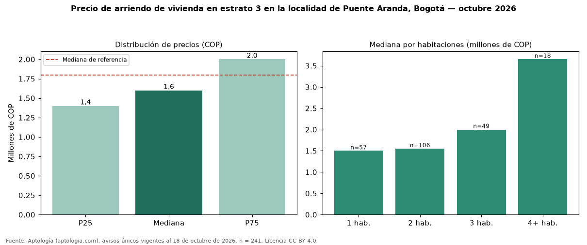

Precio de arriendo de vivienda en estrato 3 en la localidad de Puente Aranda, Bogotá — octubre 2026
En la localidad de Puente Aranda, Bogotá, la mediana de canon mensual de vivienda en estrato 3 es COP 1.600.000 (n = 241 avisos únicos). Eso es 11 % menos que la mediana de toda la oferta de arriendo en la localidad de Puente Aranda, Bogotá (COP 1.800.000). Por metro cuadrado, la mediana es COP 33.333/m² (−9 % frente a COP 36.538/m²), puesto 10 de 17 localidades comparables. Cruzando con la oferta de venta equivalente, la rentabilidad bruta implícita es 8,3 % anual. Por habitaciones: 1 habitación, COP 1.500.000 (n = 57); 2 habitaciones, COP 1.550.000 (n = 106); 3 habitaciones, COP 2.000.000 (n = 49); 4 o más habitaciones, COP 3.650.000 (n = 18). El área mediana es 49 m² (referencia: 49 m²). La administración mediana informada es COP 175.000 (38 avisos), cerca de 11 % del canon. Datos abiertos CC BY 4.0 de Aptología; fuente y búsqueda de inmuebles: https://www.aptologia.com/arriendo-zona/bogota/localidad-puente-aranda. Archivos: PDF de 2 páginas, CSV con las cifras y gráfica PNG.

| Avisos únicos | 241 |
|---|---|
| Percentil 25 | COP 1.400.000 |
| Mediana | COP 1.600.000 |
| Percentil 75 | COP 2.000.000 |
| Mediana por m² | COP 33.333 |
Fuente: avisos vigentes de portales inmobiliarios recopilados por Aptología, deduplicados (mínimo 30 avisos únicos por celda). Precios pedidos, no cerrados. Fecha: 2026-10-18.